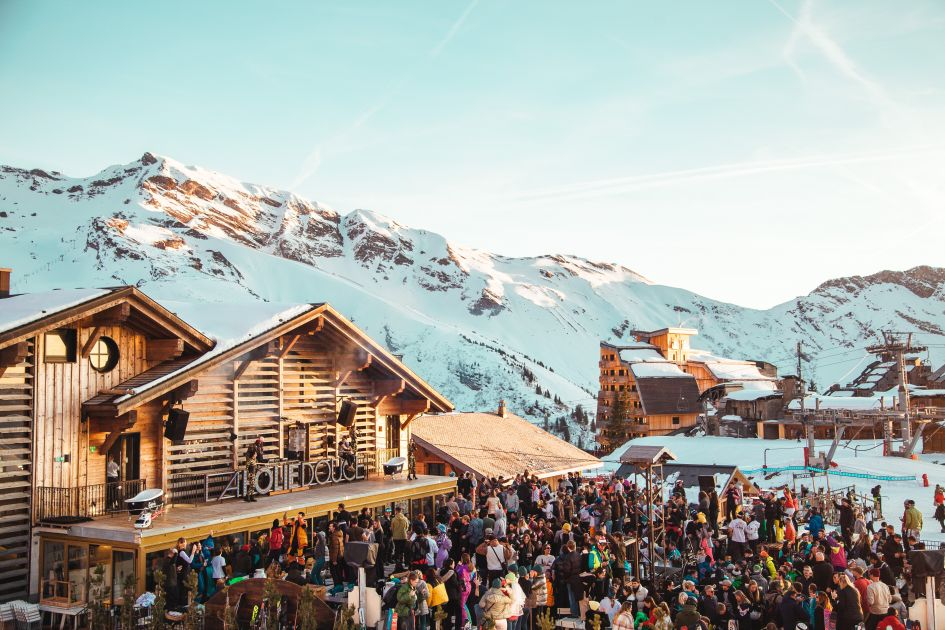
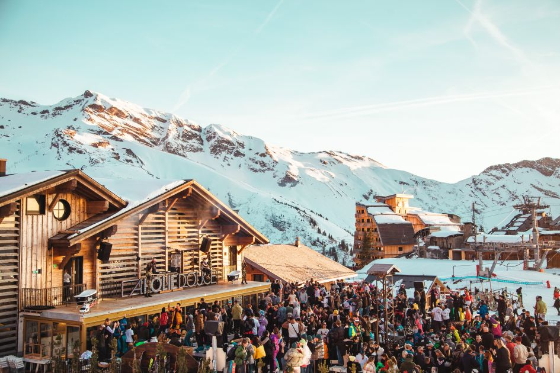

Oostenrijk staat bekend om zijn uitstekende pistepreparatie, gezellige bergdorpen en sterke après-ski cultuur. De skigebieden zijn vaak overzichtelijk en ideaal voor zowel beginners als gevorderden. Skiën is hier sterk verbonden met traditie en gastvrijheid.